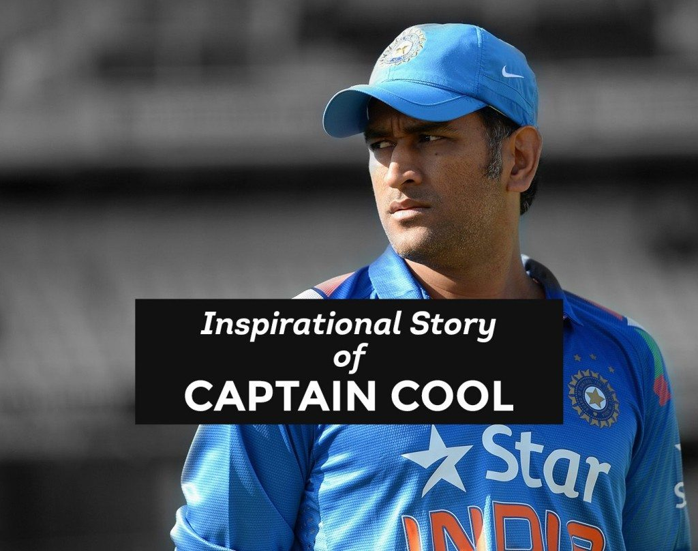
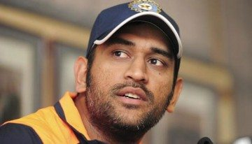
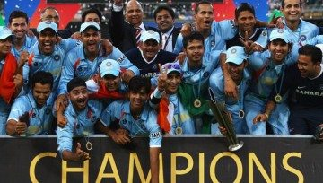

An everyday man who went on to be popularly known as the ‘Captain Cool’ is none other than our very own Indian Men’s (ODI & T20Is) Cricket Team Captain, Mahendra Singh Dhoni or simply known as Dhoni.
There was once a time when the Indian Cricket Team was simply filled with the city kids. Due to excellent infrastructure and good scope for the game in cities, many small town boys would not succeed defeating them in the Ranji Trophy. But this man proved it all wrong. MSD had seen a dream, which many feared to see.
Hailing from a very small town of Ranchi, Dhoni dared to dream and with courage and guts make that dream a reality. Since a very young age, he idolized Sachin Tendulkar who is known as the God of Cricket and Bollywood actor Amitabh Bachchan. He started his career as a Ticket Collector in Indian Railways. His hard work and never-give-up spirit finally landed him in International Cricket in 2003.
Dhoni was not only known for his cricket but was also very popular for his lengthy wavy hair style. In fact, it had then become a trend that every boy in the country now wanted to adorn the “Dhoni Hairstyle”.
Dhoni started making rounds for his cool attitude – something we all most aspire to emulate. We would find him with a smile even in the toughest of games. This calm attitude of his landed him as the Captain of the team. He had not only made his dream of playing alongside his idol Sachin a reality but had become his captain.
In 2007, he led the team a whopping victory in ICC T-20 World Cup. He continues to inspire the younger generation with his brilliant captaincy, and out of the box thinking. The upcoming movie ‘Dhoni – The Untold Story’, is Bollywood’s tribute to his genius. You can watch the trailer here if you have not already.